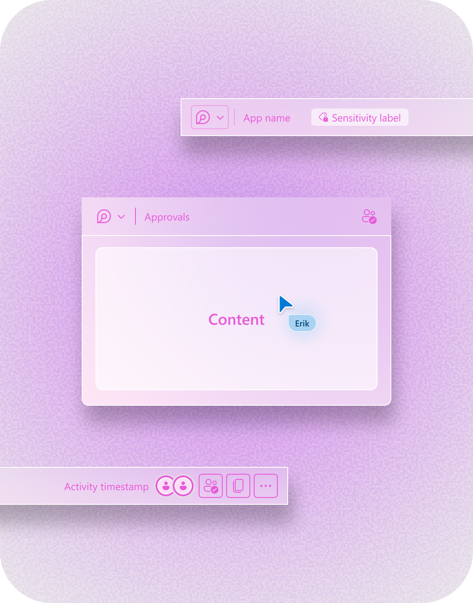
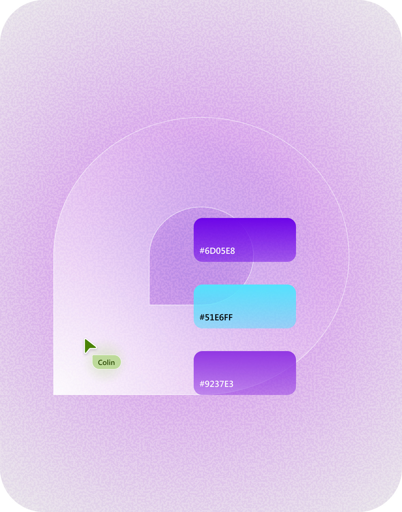
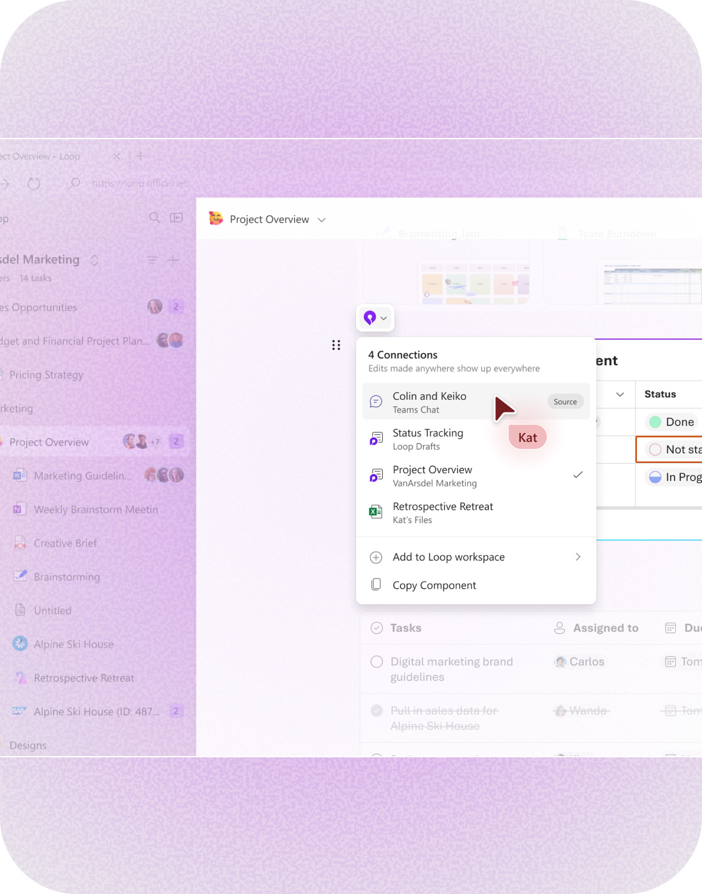

Giving Components an Identity
A live object people recognize on sight, wherever it lands.
Microsoft Loop (opens in new tab) introduced live components that could move across Microsoft 365. The hard part was making one read as the same live thing in every app it landed in, when every app had its own rules.



Approach
A Loop component had to belong to itself, not the app it lived in. I focused on what needed to stay constant as the component moved across products, what could adapt to its host, and how it should behave as a live, portable object.
- Anchor identity in one control. Keep identity, sharing, and connections in a persistent element so the component remains recognizable wherever it lives.
- Separate what travels from what adapts. Define the structure and behaviors that belong to the component itself, while allowing Teams, Outlook, Word, and other hosts to retain their own product conventions.
- Give portability its own behavior. Explore how the component enters, loads, responds to hover, and feels when experienced natively versus embedded elsewhere, including third-party environments.